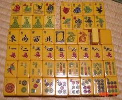
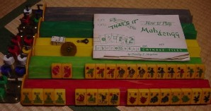
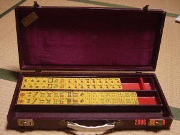

知人からヤフオクで1960年代に製造されたというベークライト牌を落札したというメールがきた。添付された画像を見ると、なるほどなるほど  も も  も逆流れ、三元牌はドラゴンスタイルで、まさにアメリカ牌。 も逆流れ、三元牌はドラゴンスタイルで、まさにアメリカ牌。

牌の大きさは、縦30ミリ・横22ミリ・厚み12ミリの中型。
アメリカ人の研究者ジム メイ氏のＨＰに、「ベークライトは1907年に作られた。ジョーカー牌とともに、ほとんどのベークライト牌は1930年代に製造された」とある。しかしどうしても色が悪い。キャラメル色なので、日本ではキャラメル牌と呼ばれている、オークションの惹句によると、アメリカではバタースコッチ牌などと呼ばれているそうだ。
そこで1960年代にはもっと色合いの良いカテリン（catalin）やヒラリン（pyralin）などが用いられるようになった。しかし廉価品としてベークライト牌も細々と製造されていた。
この落札牌、当時のルールパンフレットや花牌も１枚も揃っている（パンフレットの表紙に「1961−62」とあるので、50年くらい前に製造された牌と思われる）。

収納ハコ（アタッシュケース型で、幅50センチ・高さ８センチ・奥行き22センチ）もしっかりしているし、カギもちゃんと機能する。当時のサイコロも２個ついているし、起家マークも回転式の物がついている。そして牌台（牌を於く台）も完品だという。

となれば資料としても\30,000−くらいの価値は充分ある。それを\**,***-で落札したというのだから、まずはお値打ち。
|